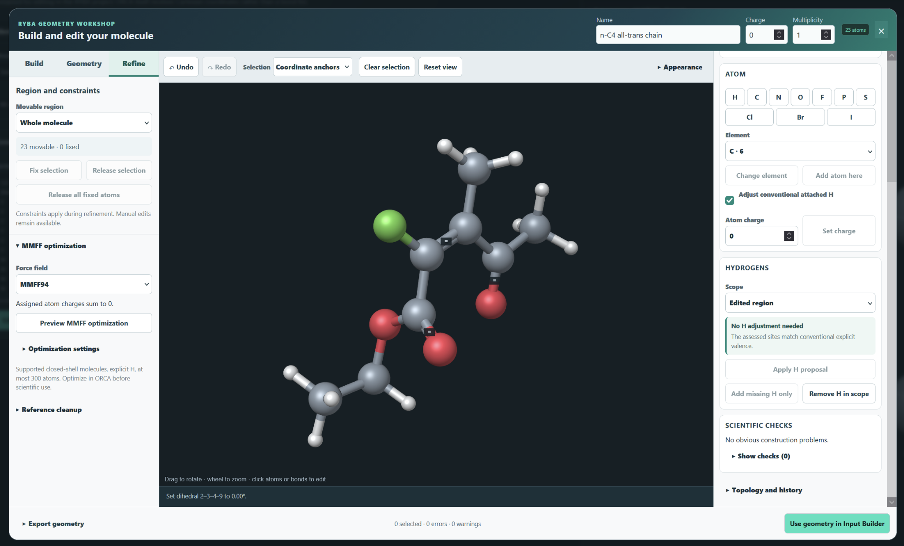
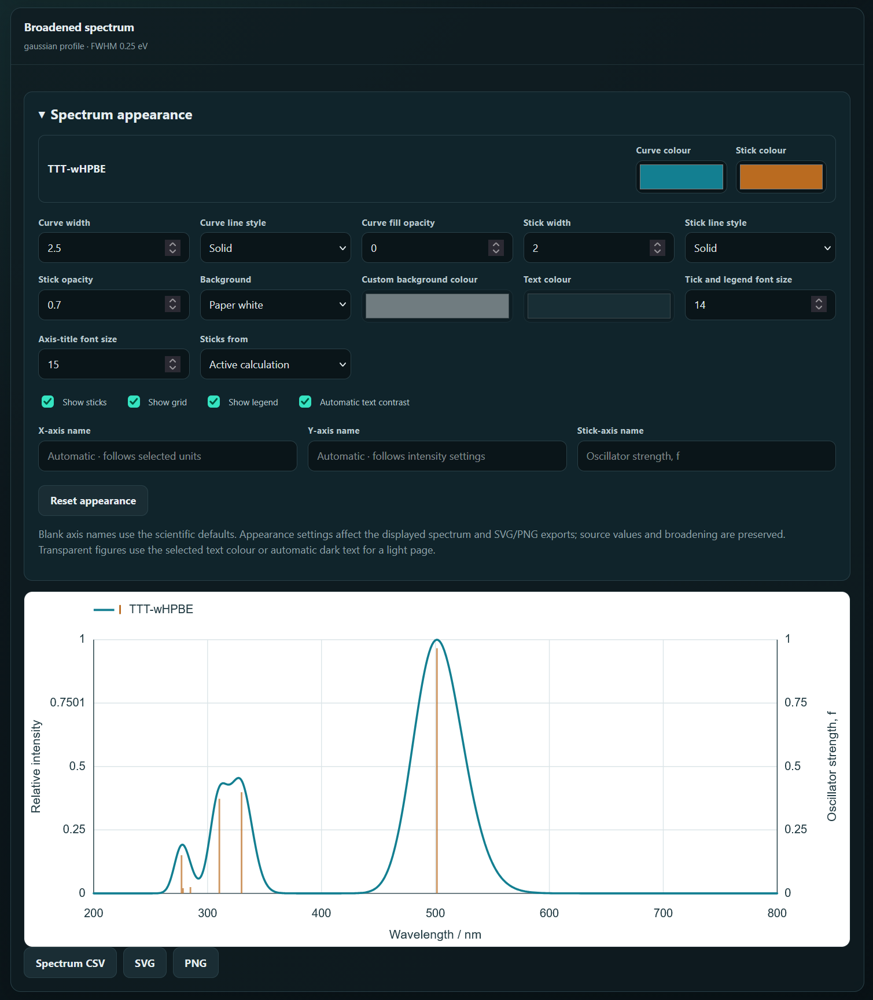
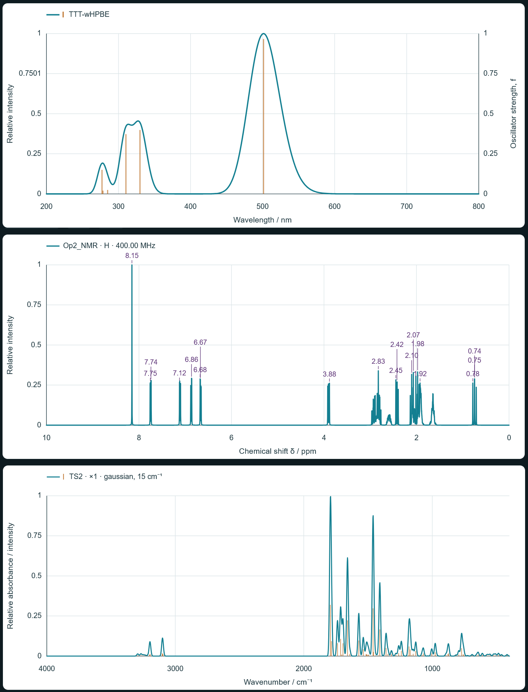
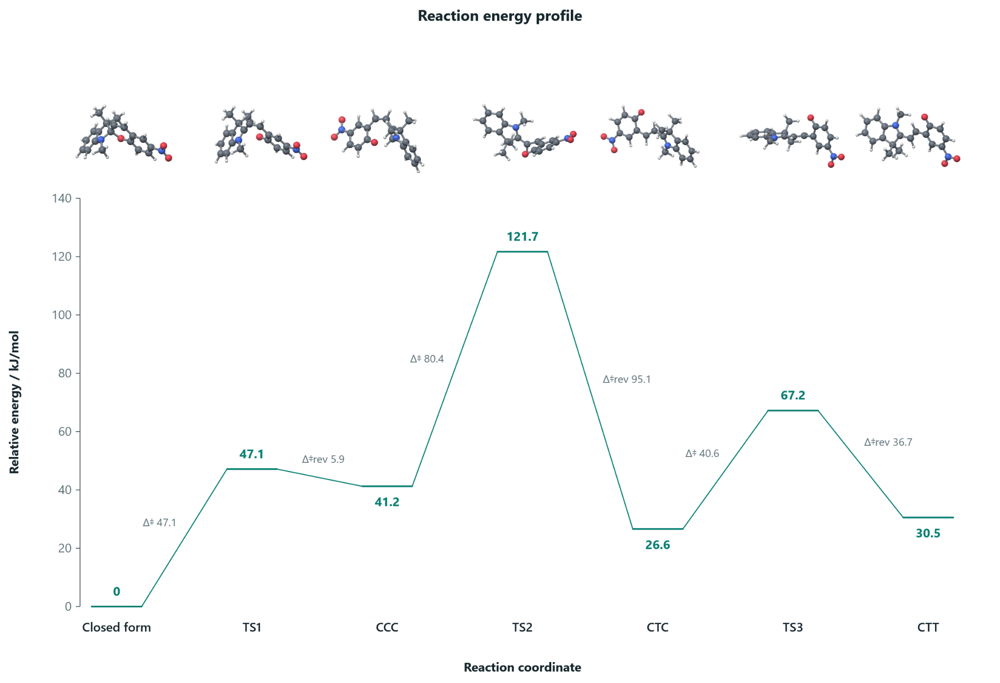
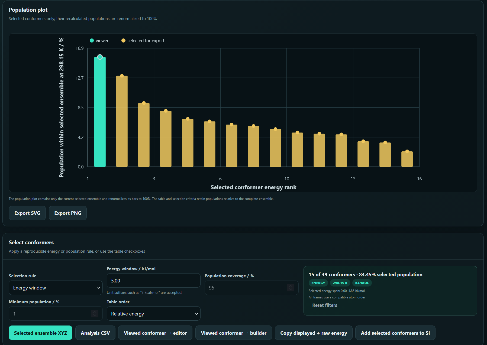
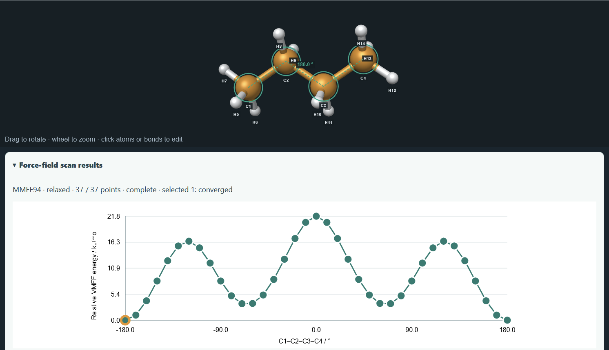

Set up the calculation
Choose the job, method, basis set, solvent and resources through a graphical input generator. Build workflows for optimisations, frequencies, excited states, scans and more.
ORCA input generator & analysis tools
RYBA is a graphical ORCA input generator and output analyser. Prepare calculations, explore the results and bring the chemistry into focus.
Available for Windows, Linux and macOS
A small fish with big plans.
Hover or tap the logo.
Features
RYBA brings input preparation, molecular editing and output analysis together, so you can spend more time understanding what your calculation is telling you.
Choose the job, method, basis set, solvent and resources through a graphical input generator. Build workflows for optimisations, frequencies, excited states, scans and more.
Inspect molecules in 3D, measure distances and angles, and adjust geometries in the Geometry Workshop. Add atoms or fragments and prepare structures for the next calculation.
Find the important results without searching through the whole output file. Inspect calculation progress, energies, geometries and method information in a structured view.
Process calculated IR, UV–Vis and NMR results in RYBA. Plot vibrational bands and electronic transitions, work with NMR shieldings and references, and adjust the spectra for comparison and export.
Bring reaction states together in thermochemical profiles. Compare relative energies and barriers, choose the reference and energy type, and include molecular structures in the exported diagram.
Pair a GOAT output with its final ensemble to connect structures, relative energies and populations. Compare conformers in a ghost overlay and align a shared core to see where their geometries differ.
Run coordinate scans with the integrated force field in the Geometry Workshop. Follow how the energy changes, inspect the geometry at each point and explore conformations before setting up further calculations.
Export molecular views and plots, then collect structures, energies and calculation details into reports and supporting information. Keep the context alongside the result.
Overview
Explore molecular editing and input preparation, IR, UV–Vis and NMR spectra, reaction energies, conformer ensembles and coordinate scans.
Edit molecular structures in the Geometry Workshop and prepare them for the ORCA input generator. Inspect the geometry in 3D, measure coordinates and refine the structure before calculation.
Geometry Workshop & input
RYBA processes IR, UV–Vis and NMR results. Explore vibrational bands, broaden electronic transitions and work with NMR shieldings and references, then style the spectra for comparison and export.
IR, UV–Vis & NMR

Compare reaction states in a thermochemical diagram with molecular structures, relative energies and forward and reverse barriers. Choose the reference and units to put the pathway in context.
Thermochemistry assistant
Connect GOAT conformers with their energies and populations. Filter the ensemble by an energy or population rule, inspect the selected population plot and export the structures you need.
GOAT explorer
Explore molecular coordinate scans directly in the Geometry Workshop using the integrated force field. Follow the energy profile and inspect the structure at each scan point.
Coordinate scans
Screenshots and figures supplied from RYBA. Select an image to enlarge.
Tutorials & examples
Practical walkthroughs for preparing ORCA calculations and turning their results into spectra, energy profiles and chemical insight.
Under construction
We are preparing the guides, screenshots and example files. The outlines below show what is coming.
Input preparation
Start with a molecular structure and prepare a calculation using RYBA’s input generator.
Planned examples ORCA input & molecular geometry
Spectroscopy
Turn calculated electronic transitions into a readable spectrum and compare the results.
Planned examples TD-DFT output & spectrum
Thermochemistry
Bring the energies of a reaction’s structures together in a clear, labelled profile.
Planned examples ORCA outputs & energy profile
Full tutorials and downloadable example files will appear here as they are completed.
Downloads
Choose the package for your system and start exploring. These are the same RYBA downloads available on nevesely.science.
Run the executable directly. No installation needed.
Choose the installer or the self-contained AppImage.
A universal package for Apple Silicon and Intel Macs.
RYBA prepares inputs and analyses results. You will also need ORCA to run quantum chemical calculations.
Downloads on nevesely.scienceNo older versions yet.
RYBA is growing. Feedback from real calculations helps shape what comes next.